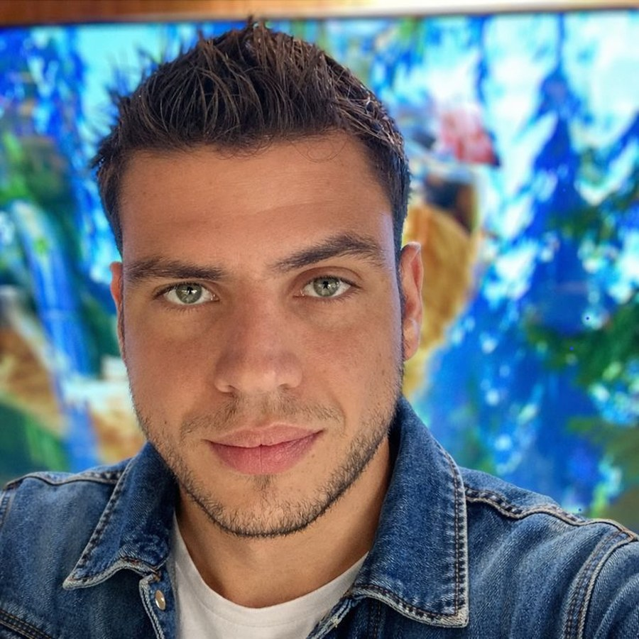

Web Design para Conversão
Estruturação de páginas com ordem de leitura, escaneabilidade, hierarquia visual e blocos de decisão.
Currículo | Web Designer

Crio landing pages, páginas promocionais e apresentações web com hierarquia visual forte, contraste limpo e leitura orientada à ação. Minha atuação vai do briefing ao deploy final, unindo copywriting, organização de conteúdo e acabamento responsivo para entregar páginas mais claras, mais confiáveis e mais prontas para converter.
Resumo
O objetivo desta versão é apresentar um currículo mais alinhado com recrutamento para Web Designer: foco em execução visual para web, clareza de proposta e portfólio real publicado.
Atuo na criação e adaptação de páginas web para produtos digitais, profissionais autônomos e marcas em crescimento. Minha entrega combina organização visual, leitura de oferta, estrutura de seções, cuidado com responsividade e publicação final.
O diferencial é unir copywriting com critério visual: não penso apenas na aparência da página, mas em como o usuário percorre a informação, entende a proposta e encontra os pontos de ação.
Minha trajetória anterior em suporte, operação, ensino e vendas fortalece comunicação, senso de prioridade, disciplina de execução e entendimento do que precisa funcionar de verdade no contato com cliente e público final.
Competências
Competências apresentadas com foco no que é defensável para uma candidatura de web design e produção visual para web.
Estruturação de páginas com ordem de leitura, escaneabilidade, hierarquia visual e blocos de decisão.
Criação e adaptação de páginas promocionais, páginas de captura, páginas de produto e apresentação de serviços.
Uso de título, subtítulo, CTA, prova e oferta em função do fluxo visual e da intenção comercial da página.
Ajustes de conteúdo, refinamento de apresentação, verificação final e deploy em subdomínios customizados.
Portfólio
Os 8 projetos continuam listados abaixo com contexto de atuação e link direto para o site publicado, em uma apresentação mais limpa e mais adequada ao currículo.
Página promocional com estrutura visual orientada a benefícios, apresentação da oferta e pontos de credibilidade.
Página focada em comunicar proposta de valor, construir interesse e conduzir o visitante para uma ação principal.
Página de apresentação para produto educacional com foco em clareza dos módulos, benefícios e incentivo à inscrição.
Projeto para comunicar programa digital com destaque de proposta, organização de informações e chamada para conversão.
Página de apoio para programa específico, com foco em objetividade, organização de informações e continuidade da experiência.
Página de apresentação com foco em posicionamento, leitura simples e visual coerente para identidade individual.
Projeto voltado para exposição de marca, reforço de identidade e apresentação mais polida de produto online.
Página de apoio e verificação com proposta objetiva, estrutura enxuta e foco em confiabilidade da experiência.
Histórico
A experiência anterior não foi descartada: ela foi reorganizada para mostrar repertório transferível para web design, atendimento de demanda e rotina de entrega.
Atendimento a usuários, apoio técnico, explicação de conteúdos e tradução de problemas em orientação clara. Essa base ajuda na leitura de briefing e no cuidado com usabilidade.
Rotina intensa, conferências, acompanhamento de operação, disciplina de processo e senso de prioridade. Experiência útil para lidar com prazos, volume de demanda e consistência de entrega.
Vivência em vendas consultivas e contato direto com cliente. Ajuda a construir páginas mais orientadas a benefício, objeções e chamada para ação.
Atuação com conferência, classificação e organização de ativos em ambiente administrativo. Reforça atenção a detalhe, padronização e leitura estruturada de informação.
Formação
A formação acadêmica foi mantida com honestidade: ela agrega repertório técnico, mas o curso está trancado neste momento.
Formação cursada até o 7º período, atualmente com matrícula trancada. Base útil em lógica, pensamento estruturado e visão técnica para dialogar com projetos digitais.
Ensino médio completo e cursos com certificado em métodos de pesquisa, língua portuguesa, inglês e comportamento com gestão de equipe.
Contato
Fechamento mais direto para recrutador: o que você faz, que tipo de projeto consegue tocar e como entrar em contato.
Web designer com repertório em copywriting e execução prática de páginas publicadas, capaz de organizar conteúdo, melhorar leitura visual e transformar produtos e serviços em presença digital mais clara.
E-mail: lauteodor@gmail.com
WhatsApp: (62) 99991-8702
Base: Goiânia, GO
Atualização: abril de 2026.